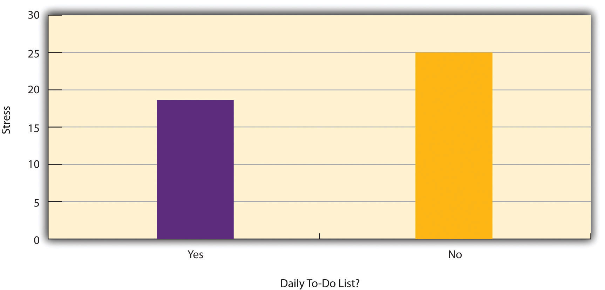

Correlational research is a type of nonexperimental research in which the researcher measures two variables and assesses the statistical relationship (i.e., the correlation) between them with little or no effort to control extraneous variables. There are essentially two reasons that researchers interested in statistical relationships between variables would choose to conduct a correlational study rather than an experiment. The first is that they do not believe that the statistical relationship is a causal one. For example, a researcher might evaluate the validity of a brief extraversion test by administering it to a large group of participants along with a longer extraversion test that has already been shown to be valid. This researcher might then check to see whether participants’ scores on the brief test are strongly correlated with their scores on the longer one. Neither test score is thought to cause the other, so there is no independent variable to manipulate. In fact, the terms independent variable and dependent variable do not apply to this kind of research.
The other reason that researchers would choose to use a correlational study rather than an experiment is that the statistical relationship of interest is thought to be causal, but the researcher cannot manipulate the independent variable because it is impossible, impractical, or unethical. For example, Allen Kanner and his colleagues thought that the number of “daily hassles” (e.g., rude salespeople, heavy traffic) that people experience affects the number of physical and psychological symptoms they have (Kanner, Coyne, Schaefer, & Lazarus, 1981).Kanner, A. D., Coyne, J. C., Schaefer, C., & Lazarus, R. S. (1981). Comparison of two modes of stress measurement: Daily hassles and uplifts versus major life events. Journal of Behavioral Medicine, 4, 1–39. But because they could not manipulate the number of daily hassles their participants experienced, they had to settle for measuring the number of daily hassles—along with the number of symptoms—using self-report questionnaires. Although the strong positive relationship they found between these two variables is consistent with their idea that hassles cause symptoms, it is also consistent with the idea that symptoms cause hassles or that some third variable (e.g., neuroticism) causes both.
A common misconception among beginning researchers is that correlational research must involve two quantitative variables, such as scores on two extraversion tests or the number of hassles and number of symptoms people have experienced. However, the defining feature of correlational research is that the two variables are measured—neither one is manipulated—and this is true regardless of whether the variables are quantitative or categorical. Imagine, for example, that a researcher administers the Rosenberg Self-Esteem Scale to 50 American college students and 50 Japanese college students. Although this “feels” like a between-subjects experiment, it is a correlational study because the researcher did not manipulate the students’ nationalities. The same is true of the study by Cacioppo and Petty comparing college faculty and factory workers in terms of their need for cognition. It is a correlational study because the researchers did not manipulate the participants’ occupations.
Figure 7.2 "Results of a Hypothetical Study on Whether People Who Make Daily To-Do Lists Experience Less Stress Than People Who Do Not Make Such Lists" shows data from a hypothetical study on the relationship between whether people make a daily list of things to do (a “to-do list”) and stress. Notice that it is unclear whether this is an experiment or a correlational study because it is unclear whether the independent variable was manipulated. If the researcher randomly assigned some participants to make daily to-do lists and others not to, then it is an experiment. If the researcher simply asked participants whether they made daily to-do lists, then it is a correlational study. The distinction is important because if the study was an experiment, then it could be concluded that making the daily to-do lists reduced participants’ stress. But if it was a correlational study, it could only be concluded that these variables are statistically related. Perhaps being stressed has a negative effect on people’s ability to plan ahead (the directionality problem). Or perhaps people who are more conscientious are more likely to make to-do lists and less likely to be stressed (the third-variable problem). The crucial point is that what defines a study as experimental or correlational is not the variables being studied, nor whether the variables are quantitative or categorical, nor the type of graph or statistics used to analyze the data. It is how the study is conducted.
Figure 7.2 Results of a Hypothetical Study on Whether People Who Make Daily To-Do Lists Experience Less Stress Than People Who Do Not Make Such Lists
Again, the defining feature of correlational research is that neither variable is manipulated. It does not matter how or where the variables are measured. A researcher could have participants come to a laboratory to complete a computerized backward digit span task and a computerized risky decision-making task and then assess the relationship between participants’ scores on the two tasks. Or a researcher could go to a shopping mall to ask people about their attitudes toward the environment and their shopping habits and then assess the relationship between these two variables. Both of these studies would be correlational because no independent variable is manipulated. However, because some approaches to data collection are strongly associated with correlational research, it makes sense to discuss them here. The two we will focus on are naturalistic observation and archival data. A third, survey research, is discussed in its own chapter.
Naturalistic observationAn approach to data collection in which the behavior of interest is observed in the environment in which it typically occurs. is an approach to data collection that involves observing people’s behavior in the environment in which it typically occurs. Thus naturalistic observation is a type of field research (as opposed to a type of laboratory research). It could involve observing shoppers in a grocery store, children on a school playground, or psychiatric inpatients in their wards. Researchers engaged in naturalistic observation usually make their observations as unobtrusively as possible so that participants are often not aware that they are being studied. Ethically, this is considered to be acceptable if the participants remain anonymous and the behavior occurs in a public setting where people would not normally have an expectation of privacy. Grocery shoppers putting items into their shopping carts, for example, are engaged in public behavior that is easily observable by store employees and other shoppers. For this reason, most researchers would consider it ethically acceptable to observe them for a study. On the other hand, one of the arguments against the ethicality of the naturalistic observation of “bathroom behavior” discussed earlier in the book is that people have a reasonable expectation of privacy even in a public restroom and that this expectation was violated.
Researchers Robert Levine and Ara Norenzayan used naturalistic observation to study differences in the “pace of life” across countries (Levine & Norenzayan, 1999).Levine, R. V., & Norenzayan, A. (1999). The pace of life in 31 countries. Journal of Cross-Cultural Psychology, 30, 178–205. One of their measures involved observing pedestrians in a large city to see how long it took them to walk 60 feet. They found that people in some countries walked reliably faster than people in other countries. For example, people in the United States and Japan covered 60 feet in about 12 seconds on average, while people in Brazil and Romania took close to 17 seconds.
Because naturalistic observation takes place in the complex and even chaotic “real world,” there are two closely related issues that researchers must deal with before collecting data. The first is sampling. When, where, and under what conditions will the observations be made, and who exactly will be observed? Levine and Norenzayan described their sampling process as follows:
Male and female walking speed over a distance of 60 feet was measured in at least two locations in main downtown areas in each city. Measurements were taken during main business hours on clear summer days. All locations were flat, unobstructed, had broad sidewalks, and were sufficiently uncrowded to allow pedestrians to move at potentially maximum speeds. To control for the effects of socializing, only pedestrians walking alone were used. Children, individuals with obvious physical handicaps, and window-shoppers were not timed. Thirty-five men and 35 women were timed in most cities. (p. 186)
Precise specification of the sampling process in this way makes data collection manageable for the observers, and it also provides some control over important extraneous variables. For example, by making their observations on clear summer days in all countries, Levine and Norenzayan controlled for effects of the weather on people’s walking speeds.
The second issue is measurement. What specific behaviors will be observed? In Levine and Norenzayan’s study, measurement was relatively straightforward. They simply measured out a 60-foot distance along a city sidewalk and then used a stopwatch to time participants as they walked over that distance. Often, however, the behaviors of interest are not so obvious or objective. For example, researchers Robert Kraut and Robert Johnston wanted to study bowlers’ reactions to their shots, both when they were facing the pins and then when they turned toward their companions (Kraut & Johnston, 1979).Kraut, R. E., & Johnston, R. E. (1979). Social and emotional messages of smiling: An ethological approach. Journal of Personality and Social Psychology, 37, 1539–1553. But what “reactions” should they observe? Based on previous research and their own pilot testing, Kraut and Johnston created a list of reactions that included “closed smile,” “open smile,” “laugh,” “neutral face,” “look down,” “look away,” and “face cover” (covering one’s face with one’s hands). The observers committed this list to memory and then practiced by coding the reactions of bowlers who had been videotaped. During the actual study, the observers spoke into an audio recorder, describing the reactions they observed. Among the most interesting results of this study was that bowlers rarely smiled while they still faced the pins. They were much more likely to smile after they turned toward their companions, suggesting that smiling is not purely an expression of happiness but also a form of social communication.
When the observations require a judgment on the part of the observers—as in Kraut and Johnston’s study—this process is often described as codingAn approach to measurement in naturalistic observation, in which target behaviors are specified ahead of time and observers watch for and record those specific behaviors.. Coding generally requires clearly defining a set of target behaviors. The observers then categorize participants individually in terms of which behavior they have engaged in and the number of times they engaged in each behavior. The observers might even record the duration of each behavior. The target behaviors must be defined in such a way that different observers code them in the same way. This is the issue of interrater reliability. Researchers are expected to demonstrate the interrater reliability of their coding procedure by having multiple raters code the same behaviors independently and then showing that the different observers are in close agreement. Kraut and Johnston, for example, video recorded a subset of their participants’ reactions and had two observers independently code them. The two observers showed that they agreed on the reactions that were exhibited 97% of the time, indicating good interrater reliability.
Another approach to correlational research is the use of archival dataExisting data that were collected or created for some other purpose. They can include school and hospital records, newspaper and magazine articles, Internet content, television shows, and many other things., which are data that have already been collected for some other purpose. An example is a study by Brett Pelham and his colleagues on “implicit egotism”—the tendency for people to prefer people, places, and things that are similar to themselves (Pelham, Carvallo, & Jones, 2005).Pelham, B. W., Carvallo, M., & Jones, J. T. (2005). Implicit egotism. Current Directions in Psychological Science, 14, 106–110. In one study, they examined Social Security records to show that women with the names Virginia, Georgia, Louise, and Florence were especially likely to have moved to the states of Virginia, Georgia, Louisiana, and Florida, respectively.
As with naturalistic observation, measurement can be more or less straightforward when working with archival data. For example, counting the number of people named Virginia who live in various states based on Social Security records is relatively straightforward. But consider a study by Christopher Peterson and his colleagues on the relationship between optimism and health using data that had been collected many years before for a study on adult development (Peterson, Seligman, & Vaillant, 1988).Peterson, C., Seligman, M. E. P., & Vaillant, G. E. (1988). Pessimistic explanatory style is a risk factor for physical illness: A thirty-five year longitudinal study. Journal of Personality and Social Psychology, 55, 23–27. In the 1940s, healthy male college students had completed an open-ended questionnaire about difficult wartime experiences. In the late 1980s, Peterson and his colleagues reviewed the men’s questionnaire responses to obtain a measure of explanatory style—their habitual ways of explaining bad events that happen to them. More pessimistic people tend to blame themselves and expect long-term negative consequences that affect many aspects of their lives, while more optimistic people tend to blame outside forces and expect limited negative consequences. To obtain a measure of explanatory style for each participant, the researchers used a procedure in which all negative events mentioned in the questionnaire responses, and any causal explanations for them, were identified and written on index cards. These were given to a separate group of raters who rated each explanation in terms of three separate dimensions of optimism-pessimism. These ratings were then averaged to produce an explanatory style score for each participant. The researchers then assessed the statistical relationship between the men’s explanatory style as college students and archival measures of their health at approximately 60 years of age. The primary result was that the more optimistic the men were as college students, the healthier they were as older men. Pearson’s r was +.25.
This is an example of content analysisA family of techniques for analyzing archival data that generally involves identifying specific words, phrases, ideas, or other content in the data and then counting or summarizing their occurrence in other quantitative ways.—a family of systematic approaches to measurement using complex archival data. Just as naturalistic observation requires specifying the behaviors of interest and then noting them as they occur, content analysis requires specifying keywords, phrases, or ideas and then finding all occurrences of them in the data. These occurrences can then be counted, timed (e.g., the amount of time devoted to entertainment topics on the nightly news show), or analyzed in a variety of other ways.
Discussion: For each of the following, decide whether it is most likely that the study described is experimental or correlational and explain why.